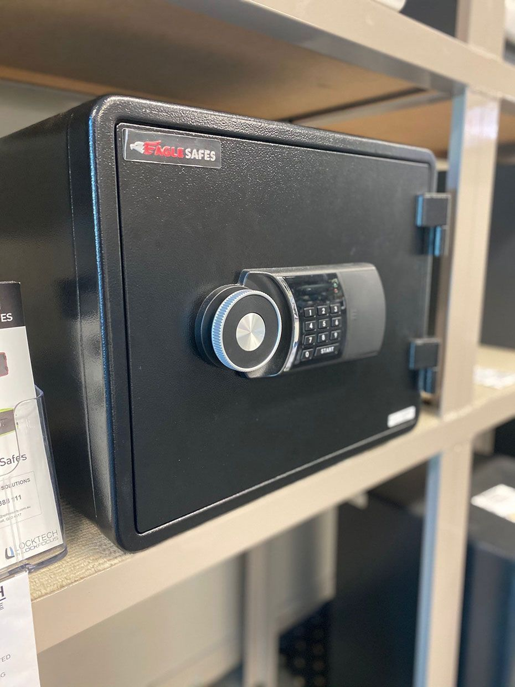
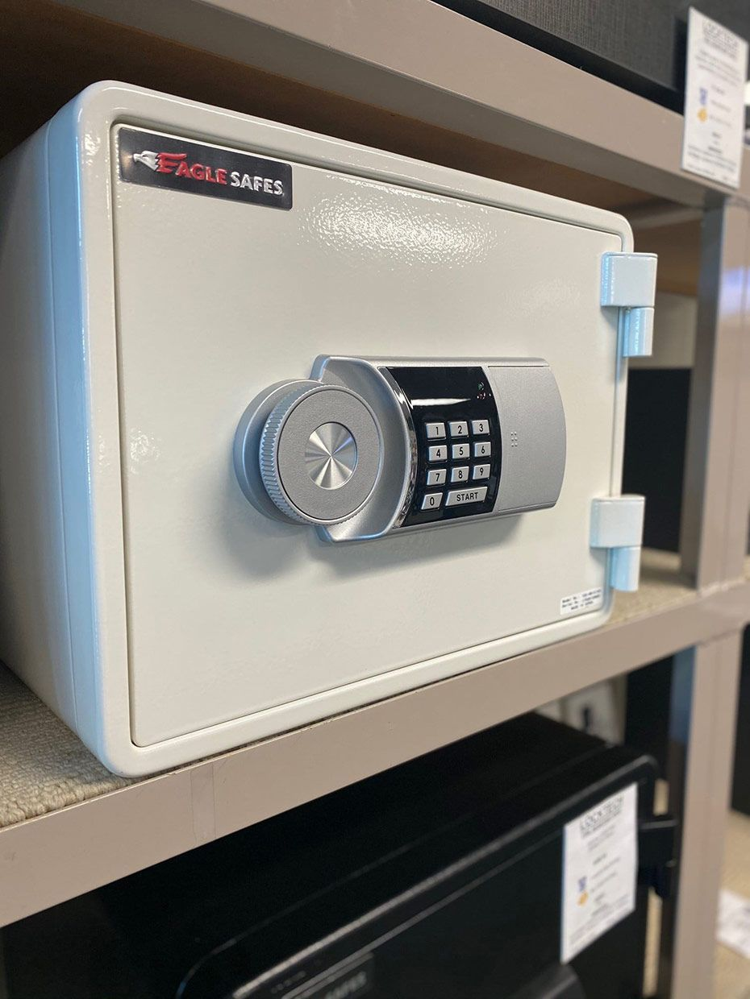

On this page
AT A GLANCE
When it comes to keeping your most valuable items, critical documents and cherished possessions secure, investing in the right safe is essential.
Get A Free Quote Now!
Thank you for contacting SPL Security Solutions.
We will be in touch soon.

High Quality Safes Bundall
When it comes to keeping your most valuable items, critical documents and cherished possessions secure, investing in the right safe is essential. Whether for personal or business use, safes are a dependable way to safeguard against theft, fire and even water damage, giving you peace of mind in any setting.
At SPL Security Solutions, we offer a diverse range of safes tailored to meet your specific needs. From compact options for residential use to high-capacity safes designed for businesses, our products feature advanced locking systems such as key, combination and digital mechanisms. Whatever your security priorities—be it protecting treasured family keepsakes or safeguarding sensitive business agreements—we’ll help you find the perfect safe. Plus, every safe purchase includes delivery, a minimum one-year warranty and the backing of exceptional customer support.
For advice on securing your valuables in Bundall and surrounding areas, call (07) 5588 8111 today.
Bundall residents can trust our professional residential locksmith services for all their home security needs. Whether you require lock upgrades, key duplication or emergency lockout support, we deliver reliable and efficient solutions.
Our commercial locksmith solutions are tailored to meet the unique security demands of businesses in Bundall. From installing master key systems and access control to conducting security audits and high-security lock installations, we provide comprehensive protection for your property.
Locked out of your car or dealing with a faulty key? Our automotive locksmith services offer fast and dependable solutions for Bundall drivers. Whether it’s replacing lost keys, repairing damaged ones or reprogramming transponder keys, we ensure you’re back on the road in no time.
Enhance your property’s security with our restricted key systems that prevent unauthorised duplication of keys. These advanced systems provide managed access to designated areas, making them ideal for businesses and organisations in Bundall.
Protect your most valuable items with our extensive selection of safes designed for durability and resilience. Our Bundall clients benefit from safes that can withstand theft, fire, and, in some cases, water damage.
In Bundall, we specialise in designing advanced security systems that combine cutting-edge technology with tailored solutions. From CCTV cameras and alarm systems to access control and intercoms, we cover all aspects of surveillance.
Upgrade your property’s security in Bundall with our high-quality lock hardware, built for durability and peace of mind. From sturdy deadbolts to advanced smart locks, we offer solutions for both residential and commercial properties.
Combine functionality and aesthetics with our premium door hardware collection in Bundall. Choose from stylish handles, knobs and hinges to heavy-duty door closers, designed to meet the needs of both homes and businesses.
Our architectural door hardware collection ensures style and function, offering fire-resistant solutions, seamless closers, and elegant handles for both traditional and contemporary spaces in Bundall.
Expert Safe Services Bundall
At SPL Security Solutions, we provide comprehensive services to ensure your safe is installed, maintained and repaired to the highest standards.
- Delivery and Installation
Our team ensures your safe is delivered and installed securely in the most suitable location. We take into account accessibility, weight distribution and your specific security requirements to guarantee optimal placement. - Safe Repairs
We offer reliable repair services to address issues like wear and tear, mechanical failures, or damage from attempted break-ins. Our prompt and professional approach helps extend the lifespan of your safe while maintaining its integrity. - Unlocking Services
If you’re locked out due to a lost key, forgotten combination, or malfunctioning lock, our unlocking service provide fast and effective solutions. We use advanced techniques to open your safe without damaging the contents inside.

Contact Details
24/7 Emergency Locksmiths or Security Tech


Trading Hours
Retail Shop
Get in Touch

Frequently Asked Questions
-
What is the best type of safe for home use?
The best type of safe for home use depends on your needs, but fire-resistant safes are ideal for protecting important documents and valuables from both fire and theft. For extra security, wall-mounted or floor safes are also excellent options as they are harder to remove or tamper with.
-
How often should a safe be serviced?
A safe should be professionally serviced every 1–2 years to ensure the locking mechanisms and components remain in proper working condition. Regular maintenance helps prevent malfunctions, especially in cases of frequent use or exposure to environmental factors like humidity.
Locksmith & Security Solutions Gold Coast, Brisbane & Northern NSW